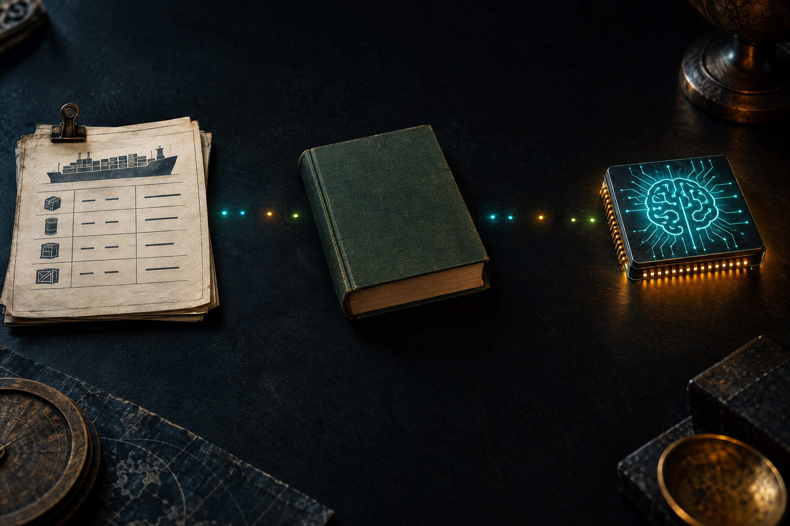

你的 IG 貼文圖，會變成 AI 的練習題嗎？563 噸是一條線索
POV：你熬夜做完社團 IG 招生圖，留言卻飄來一句：「這張很 AI 欸。」你明明是自己設計的，心裡冒出兩題：別人覺得像 AI，能證明它被拿去訓練嗎？如果真的用了你的圖，該不該先問？
這是迷因式假設，不代表你的作品真的被拿去訓練。畫面風格相似，不能單獨證明訓練資料來源；接下來拆開看法院文件、貨運報導和仍待證實的連結。
創作者案例｜蔡阿嘎談「AI 對決似顏繪」
台灣 YouTuber 蔡阿嘎在日本街頭請畫家為孩子畫似顏繪後，又用 AI 生成版本並讓粉絲投票，引起「拿 AI 版本和真人作品公開比較，是否尊重創作者」的討論。本片是他本人回應事件，不是法律解說，也不是侵權判決。建議先看開頭 20–30 秒，請同學想：買下畫作，是否代表取得所有使用方式的權利？哪些是著作權／授權問題，哪些是創作者倫理？若播放器不能播放，在 Instagram 看蔡阿嘎原片；也可先讀事件背景報導。
暖場提醒：先聽創作者本人怎麼說，再分清可核對的事實、個人觀點與法律判斷；本片不代表法院已認定侵權。
原始影片｜「台灣的書賣到國外，拿來訓練 AI，然後再跟國外買 AI 服務」
先看原影片縮圖與主張，再往下分辨法院文件、貨運報導和仍待證實的連結。縮圖是原影片封面，不代表本頁已證實其標題說法。點縮圖即可在此播放；若無法播放，直接開啟 YouTube。

美國法院在這宗案件認定，特定書籍用於模型訓練，以及合法買來的紙本書掃描後以數位本取代，屬合理使用；盜版副本留在通用圖書庫則不是。台灣出貨資料與 Anthropic 的供書洽談紀錄各自存在，但目前沒有公開資料能逐批證明這 563 噸書全被買下、掃描並用於 Claude 訓練。
先別急著炎上，
這裡少的是「證據連結」
網路標題：「563 噸＝Claude 全部吃掉？」
查證字幕：貨運紀錄 ≠ 逐批買下 ≠ 已證明拿去訓練。
不是不信，是把「目前證明到哪裡」講清楚。
8 秒短影音口播｜Reels／TikTok／Shorts 都能用
梗可以快，證據不能跳剪「563 噸書從台灣出去＝全部拿去訓練 AI？」
「先等等，這個等號接太快了。」
「有貨運報導，也有供書洽談紀錄；但還沒逐批對上。」
「先別腦補補完：目前只能證明到這裡。」
這是把本頁已列出的查證結論改寫成短影音口吻，不是新增證據或暗示每批書都進了模型。

看起來像 AI，不等於被拿去訓練
證據要一段一段接上，不能從「像」直接跳到「用過」。
風格相似
只能當作觀察到的線索，無法單獨指出作品來源。
來源紀錄
需要看購買、授權、下載或其他可查證的資料。
逐筆連結用途
再把具體作品、取得紀錄與後續訓練用途對上。
11/27 會議紀錄：提到「第四筆訂單」，合約仍在內部簽核
563.143 公噸 · 16 批 · 台北／高雄／基隆出港
切脊 → 掃描 → 紙張回收
包含台灣使用者
⚠ 虛線就是查證的邊界：船運資料追到 UDC → Better World Books；法院附件記的是供書洽談狀態。兩邊尚未逐筆對上，貨物內容、成交與後續用途也不能由噸數直接推定。
法院不是只問「有沒有掃描」
在這宗美國案件裡，取得方式和副本最後怎麼用，會改變判斷。
用書訓練模型
特定模型訓練用途：法院認定屬合理使用。
合法買紙本，再掃描替換
紙本書合法購得、掃描後以數位副本取代：法院認定屬合理使用。
盜版副本留在通用書庫
將盜版副本留作一般用途的圖書庫：法院認定不屬合理使用。
簡化自美國 Bartz v. Anthropic 裁定；不是台灣法律意見。
① 證實
- Project Panama 是真的：解封的 Anthropic 內部規劃文件，把計畫描述為「破壞性掃描全世界所有書籍」，並寫「不希望外界知道我們在做這件事」
- 台灣進入供書洽談紀錄：2024/11/27 會議紀錄稱 UDC 為「第四筆訂單」、合約仍待內部簽核；同份紀錄對日本日販、韓國熊井的進度不同，不能混成已完成出貨
- 法院把用途分開裁定（美國本案）：2025/6/23 認定特定模型訓練及合法購買紙本書的格式轉換屬合理使用；盜版副本留作通用圖書庫則不屬合理使用。15 億美元和解於 2026/7/20 最終批准，名單列 482,460 部作品，不等於全部七百萬份下載
② 數字真，口徑要修
- 563 噸比日韓多：同份船運調查，韓國 165.69 噸、日本 122.155 噸（僅東京提貨口徑，另有 80.799 噸經釜山口徑未確認）
- 不全是台灣的書：563 噸含經台灣轉運的中國簡體書，比例不明——只能說「經台灣出境」，不能說「台灣出版」
- 「約 140 萬本」是推估：用每本 400 克回推，不是法院或船運的冊數數字
- Anthropic 的回應：媒體報導其稱購買實體書訓練 LLM 在業界常見，並否認計畫涉及購買、銷毀珍本，也否認訓練後大量銷毀書籍
③ 未證實／推測
- 563 噸全進 Claude：無逐批證據證明全部被 Anthropic 買下、送掃描、用於訓練
- 「繞道台灣躲美中緊張」：是韓媒的推測，不是 Anthropic 的說法；文件只提到簡體書，未證明與訂單的關聯
- 「再買回 AI 服務」：是可討論的產業結構，不是能對帳的逐本因果；這批出貨是否進 Claude 尚未證實
- 為什麼選台灣：法院文件沒寫，任何理由目前都是猜測
兩種取得內容的方式值得比較：商業 AI 公司透過通路購書，政府主權 AI 語料庫則以「自願、無償授權」徵集。今周刊 2026/10/14 報導，資料庫當時 7,161 筆中有 111 筆來自民間，約 1.6%；這是該資料庫當時的筆數比例，不代表台灣所有訓練資料。受訪者所說「主流 LLM 繁中語料不到 1%」則是估計，公開報導未交代統計方法。可以問：要讓台灣觀點進到模型裡，授權該無償、付費，還是由作者選擇？
💬 15 分鐘 A/B 實作｜先定調，再生成
先定 3 個設計選擇
感受 · 主角與留白 · 場景
A｜完整描述
依三個選擇寫提示並生成
B｜簡短提示
只輸入一句短提示，再比較
題目：做一張「社團 IG 招生貼文圖」。先寫三行：①想讓新生感到什麼 ②主角放哪裡、哪裡留白放標題 ③背景要交代社團在做什麼。先畫構圖，再照三行提示生成 A；接著只輸入一句簡短提示，生成 B。
最後比一比：哪張更像你想發在 IG 的圖？哪一版少改幾次？哪些設計決定還是得由你自己做？不用交出或公開自己的帳號或舊作品。加碼 30 秒：把查證結論改成一段短影音字幕或迷因文案；可以玩「先別急著炎上」，但不能把「尚未證實」剪成「已經證實」。